Geometrical Construction and Loci
92.
The diagram shows the part of the two houses X and Y and a path P.
Scale 1 cm represents 25 m.
A public phone is installed such that it is:
• Less than 125 m from X
• Nearer to Y than X
• More than 100 m from the path
Using ruler and compasses only, find the region where the public phone can be placed. Label it T.
Scale 1 cm represents 25 m.

• Less than 125 m from X
• Nearer to Y than X
• More than 100 m from the path
Using ruler and compasses only, find the region where the public phone can be placed. Label it T.
See diagram [4]
Paper 2
93.
The diagram shows triangle RST.
(a) Measure and write the size of angle RST.

(a) ......................... [1]
(b) Q is the point where the angle bisectors of R, S and T meet. Mark and label the position of the point Q.
(b) See diagram [3]
(c)(i) M is the mid-point of TR and N is the mid-point of RS. Measure the distance, x cm, of line MN from Q.
(c)(i) ......................... cm [1]
(ii) Shade the region that is:
• less than x cm from Q,
• nearer to TR than to TS, and
• nearer to RT than to RS.
• less than x cm from Q,
• nearer to TR than to TS, and
• nearer to RT than to RS.
(c)(ii) See diagram [2]
Paper 2
94.
Triangle ABC is such that AB = 8 cm, AC = 5 cm and angle BAC = 60°.
AB has already been drawn for you.
(a) Construct triangle ABC.
AB has already been drawn for you.

(a) See diagram [2]
(b) Construct the bisector of angle ABC.
(b) See diagram [2]
(c) Write down the length of BC.
(c) BC = ......................... cm [1]
Paper 2
95.
The diagram shows a plan of a triangular plot ABC.
Water pipe runs through point A to C.
(a) Construct locus of all points that are:
(i) Equidistant from B and C,
Water pipe runs through point A to C.

(i) Equidistant from B and C,
(a)(i) See diagram [1]
(ii) Equidistant from AB and BC.
(a)(ii) See diagram [2]
(b) A tap T is mounted such that it is:
• Equidistant from AB and BC
• Equidistant from B and C
Label the point where the tap is mounted T.
• Equidistant from AB and BC
• Equidistant from B and C
Label the point where the tap is mounted T.
(b) See diagram [1]
Paper 2
96.
The diagram shows a triangle ABC.
(a) Measure angle ACB.

(a) ......................... [1]
(b) The point D is above AC, such that AD is 5 cm and CD is 4 cm. By construction, complete the triangle ADC.
(b) See diagram [2]
(c) The region R lies within the quadrilateral ABCD.
The points in R are:
• nearer to C than A and
• more than 4 cm from B.
By accurate construction, shade the region R.
The points in R are:
• nearer to C than A and
• more than 4 cm from B.
By accurate construction, shade the region R.
(c) See diagram [4]
Paper 2
50.
The diagram shows a triangle ABC.
(a) Measure and write the length of BC.

......................... cm [1]
(b) (i) By construction, show all the points inside triangle ABC, that are:
(a) 1.5 cm from AC,
(b) Equidistant from C and A.
(ii) Shade the region, inside triangle ABC, of points that are:
• more than 1.5 cm from AC
and
• nearer to C than A
(a) 1.5 cm from AC,
(b) Equidistant from C and A.
(ii) Shade the region, inside triangle ABC, of points that are:
• more than 1.5 cm from AC
and
• nearer to C than A
See diagram [6]
Paper 4
51.
The diagram shows a quadrilateral ABCD.
(a) Explain why A, B, C and D lie on a circle.

......................... [1]
(b) Find, by construction, the point O, equidistant from all the vertices.
See diagram [2]
(c) Find, by accurate construction, the region, inside the quadrilateral, containing the points, P such that:
• P lies nearer to CD than DA,
• P lies nearer to CD than CB.
Shade this region.
• P lies nearer to CD than DA,
• P lies nearer to CD than CB.
Shade this region.
See diagram [3]
(d) Describe the locus of a point Q, which is equidistant from AB and BC, if Q lies:
(i) On the plane ABCD,
(i) On the plane ABCD,
......................... [1]
(ii) In space.
......................... [2]
Paper 4
52.
The diagram shows a map of four villages A, B, C and D.
(i) Using a scale of 1 cm to represent 2.5 km, make an accurate drawing of the map on the space provided.
CD has been drawn for you.

CD has been drawn for you.

See diagram [4]
(ii) Measure and write down the size of the angle ABC.
......................... [1]
(iii) Find the actual distance from village B to C.
......................... km [2]
(iv) Describe the locus of all points that are equidistant from C and D.
......................... [2]
(v) Another village E is located on the map such that it is:
(a) 7.5 km away from village B,
(b) equidistant from BC and CD,
(c) closer to A than C.
On your scale drawing, by construction, mark the location of the village E.
(a) 7.5 km away from village B,
(b) equidistant from BC and CD,
(c) closer to A than C.
On your scale drawing, by construction, mark the location of the village E.
See diagram [3]
Paper 4
53.
The diagram represents a triangular field ABC.
Scale: 1 cm to 50 m.
(a) Find the actual distance AB.
Scale: 1 cm to 50 m.

......................... m [2]
(b) Construct the locus of all points, inside the field, that are:
(i) 150 m from AB,
(ii) Equidistant from AB and BC.
(c) A tree is to be planted inside the field so that it is:
• Less than 150 m from AB, and
• Closer to BC than to AB.
Shade the possible region in which the tree can be planted.
(i) 150 m from AB,
(ii) Equidistant from AB and BC.
(c) A tree is to be planted inside the field so that it is:
• Less than 150 m from AB, and
• Closer to BC than to AB.
Shade the possible region in which the tree can be planted.
See diagram [6]
Paper 4